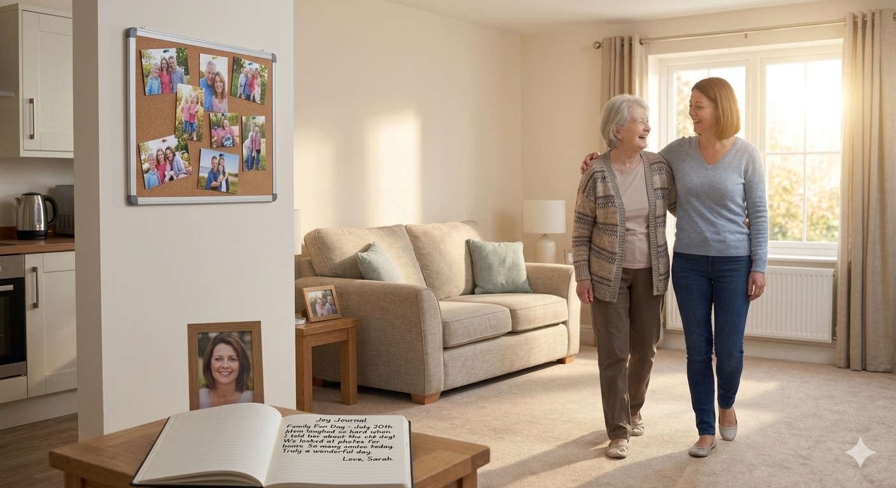
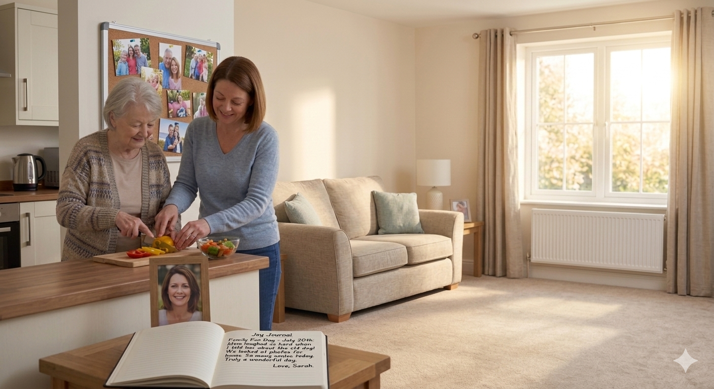
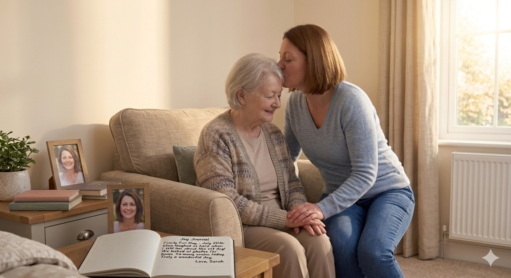
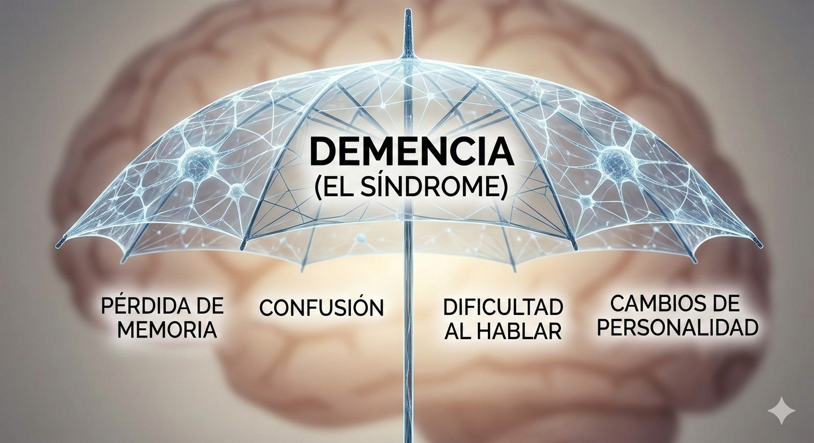
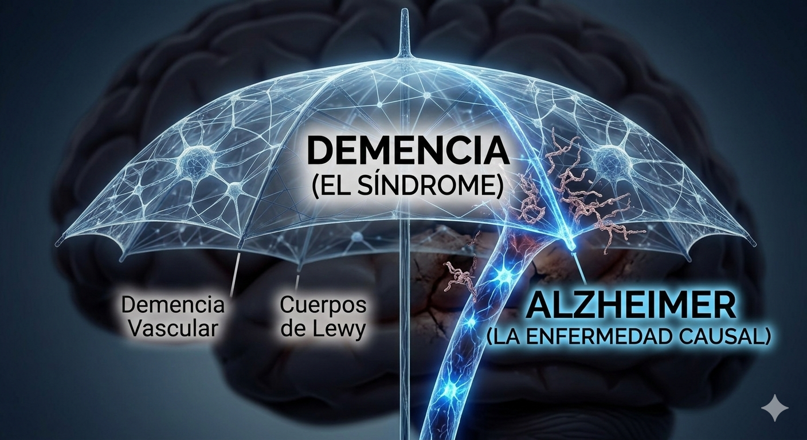
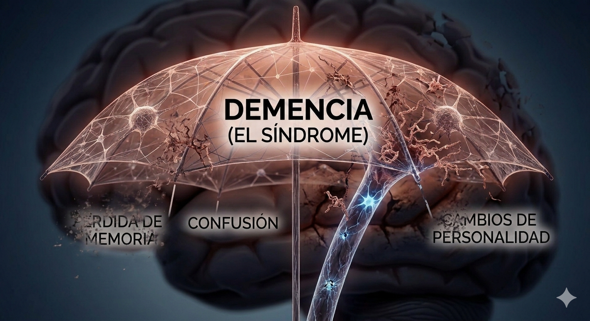
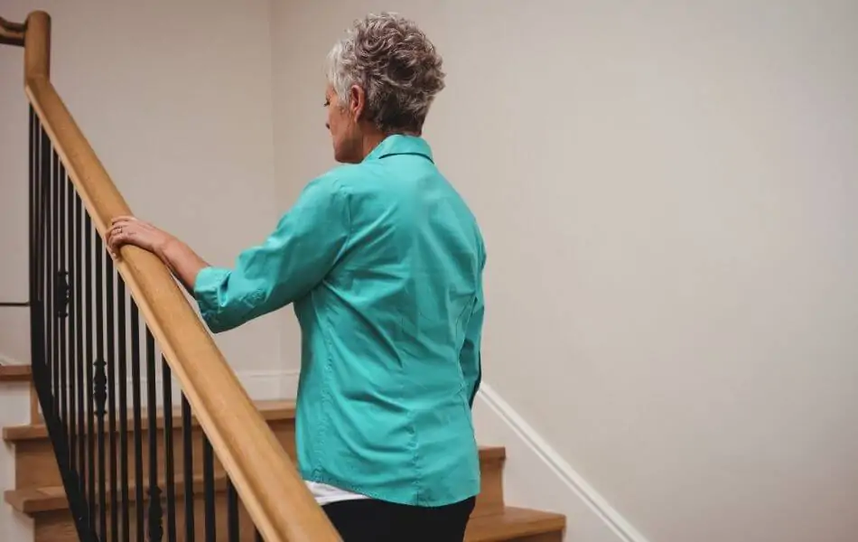

Cuidar no es solo un trabajo o una responsabilidad
Es el arte de acompañar a un alma a sentirse segura en un mundo que le resulta extraño.



¿Qué es el Alzheimer?
El Alzheimer es una enfermedad neurodegenerativa progresiva y la causa más común de demencia (entre el 60% y 80% de los casos). A diferencia del olvido común por la edad, el Alzheimer destruye las células nerviosas y las conexiones en la corteza cerebral, lo que provoca una pérdida severa de la memoria y las capacidades cognitivas.
Los síntomas de Alzheimer (cambios en la forma de pensar, recordar, razonar y comportarse) se conocen como demencia. Por esta razón,
algunas veces se hace referencia a la enfermedad de Alzheimer simplemente como “demencia”. Otras enfermedades y afecciones también
pueden ocasionar demencia, pero la enfermedad de Alzheimer es su causa más frecuente en las personas mayores.
La enfermedad de Alzheimer no es una parte normal del envejecimiento, sino que es el resultado de cambios complejos
en el cerebro que empiezan años antes de que aparezcan los síntomas y que originan la pérdida de neuronas y sus conexiones.
La etapa inicial de Alzheimer
Es cuando una persona empieza a tener pérdida de la memoria y otras dificultades cognitivas, aunque los síntomas parecen ser graduales para la persona y su familia.
La etapa Intermedia del Alzaheimer
Los daños ocurren en áreas del cerebro que controlan el lenguaje, el razonamiento y el proceso sensorial y los pensamientos conscientes. Las personas en esta etapa pueden tener más confusión y dificultad para reconocer a su familia y amigos, Es la etapa más larga.
La etapa Avanzada del Alzaheimer
La persona no puede comunicarse, depende totalmente de otros para su cuidado y es posible que se quede en la cama la mayoría o todo el tiempo, a medida que el cuerpo va dejando de funcionar.
Alzheimer vs. Demencia: Por qué no son lo mismo aunque siempre van de la mano
La Demencia no es una enfermedad única. Es un síndrome,"un paraguas"; es decir, un conjunto de síntomas (pérdida de memoria, confusión, dificultad para hablar) que son lo suficientemente graves como para interferir con la vida diaria.
El Alzheimer, en cambio, es una enfermedad específica que causa esos síntomas. Es la responsable de que ese "paraguas" se abra en el 60-80% de los casos.Puedes tener demencia y que NO sea Alzheimer (puede ser demencia vascular, demencia por cuerpos de Lewy,o demencia frontotemporal ). Pero si tienes Alzheimer, por definición terminarás desarrollando un cuadro de demencia.
El Alzheimer es la causa y la Demencia es el resultado, en el alzaheimer las proteínas (tau y amiloide) empiezan a destruir neuronas en el cerebro años antes de que se note, cuando el daño cerebral es tan grande que la persona ya no puede recordar el nombre de su hijo o cómo vestirse, decimos que esa persona tiene "Demencia tipo Alzheimer".

(La demencia)

(El Alzheimer)

(Demencia tipo Alzheimer)
Más allá del Alzheimer: Conociendo otros rostros de la demencia
| Imagen | T-Demencia | ¿Qué es? | Causa Principal | Síntomas Clave | Tratamiento |
|---|---|---|---|---|---|
|
🧠
|
Alzheimer | Enfermedad progresiva que destruye neuronas y conexiones. | Acumulación de placas amiloides y ovillos de proteína tau. | Pérdida de memoria reciente, desorientación y cambios de humor. | Inhibidores de colinesterasa y estimulación cognitiva. No tiene cura. |
|
🩸
|
Vascular | Deterioro por falta de flujo sanguíneo al cerebro. | Mini-derrames cerebrales (ACV),hipertensión severa que daña las arterias del cerebro | Dificultad para planificar, lentitud de pensamiento, problemas de marcha,el deterioro suele ocurrir "a pasos" (empeora de golpe tras un ictus). | Control de presión arterial, colesterol y diabetes para evitar más daño y que no avance. |
|
👁️
|
Cuerpos de Lewy | Depósitos anormales de proteína alfa-sinucleína en las neuronas. | Acumulación de proteínas que afectan mensajeros químicos del cerebro. | Alucinaciones visuales(ven personas o animales que no están), temblores y fluctuaciones de alerta. | Fármacos para el Parkinson y terapias de sueño. |
|
👤
|
Frontotemporal | Afecta los lóbulos frontales y temporal del cerebro encogiendolos.Tipos 1. Variante conductual:cambia la personalidad 2. Afasia progresiva primaria:afecta solo el habla y el lenguaje. | Degeneración de los lóbulos frontales y temporales. | Cambios drásticos en personalidad y en el habla. | Antidepresivos y terapia de lenguaje. Foco en manejo de conducta. |
Un nuevo camino: Primeros pasos tras el diagnóstico
Vivir con Alzheimer al inicio es como estar en una habitación donde la luz parpadea. Aún hay claridad, pero hay miedo,
Si es usted o un ser querido ha sido diagnosticado con la enfermedad de Alzheimer o alguna demencia relacionada siga estos concejos o comuníqueseloa a su familiar.
• Acepta tus emociones: Es normal sentir rabia, miedo o negación. No te apresures a "estar bien".
• Enfócate en lo que puedes hacer: Mantén tus rutinas. El ejercicio físico y la vida social son tus mejores aliados para ralentizar el avance.
• Simplifica tu entorno: Empieza a etiquetar cajones o a usar una agenda única. No esperes a que la memoria falle más para crear estos hábitos.
Planificación de la atención médica
Hable con su familia, amigos y proveedores de atención médica sobre qué tipos de cuidados desearía,en el caso de la planificación de la atención médica, estas directivas comunican de forma anticipada los deseos de una persona.
• Un testamento vital (o en vida),que permite que los médicos sepan cómo desea que le den tratamiento si está falleciendo o queda inconsciente permanentemente
y no puede tomar sus propias decisiones sobre tratamientos de emergencia.
• Un poder notarial duradero para la atención médica, que designa a alguien como apoderado legal para que tome decisiones médicas cuando usted no pueda hacerlo.
• Una orden de no intubar (DNI, por sus siglas en inglés), que permite que el personal médico de un hospital o un asilo sepa que usted no desea que lo conecten a una máquina para respirar.
• Una orden de no resucitar (DNR, por sus siglas en inglés), que informa a los profesionales de salud que no deben realizar resucitación cardiopulmonar (RCP) u otro procedimiento de soporte vital, en caso de que se detenga el corazón o la respiración.
Planificación financiera
Las directivas anticipadas para la planificación financiera son documentos que comunican los deseos financieros de la persona y deben prepararse mientras ella aún tenga la capacidad legal para tomar decisiones.
• Un testamento, que especifique la forma en que se distribuirá y gestionará su patrimonio (como propiedades, efectivo y otros activos financieros) cuando fallezca. El documento también puede abordar asuntos como el cuidado de menores, donaciones y arreglos para el final de la vida, como el funeral y el entierro.
• Un poder notarial duradero para las finanzas, que designa a alguien para que tome las decisiones financieras por usted cuando ya no lo pueda hacer.
• Un fideicomiso en vida, que designa e instruye a alguien, denominado fideicomisario, para que mantenga y distribuya la propiedad y los fondos en nombre suyo cuando usted ya no pueda hacerse cargo de sus asuntos.
Cuidar con dedicación y ternura

La palabra “cuidador” se usa para referirse a cualquier persona que ofrece su cuidado a otra. Millones de personas que viven alrededor del mundo cuidan a un amigo o familiar con la enfermedad de Alzheimer o alguna demencia relacionada. Para muchas familias, cuidar a una persona con demencia no es un trabajo facil,puede resultar agobiante.
Consejos para su cuidado diario
Al inicio de la enfermedad de Alzheimer y las demencias relacionadas, las personas presentan cambios en el pensamiento, la memoria y el razonamiento de una forma que afecta la vida y las actividades diarias.
A continuación, encontrará algunos consejos que pueden considerarse al principio y a medida en que la enfermedad va avanzando:
• Intente mantener una rutina establecida, como bañarse, vestirse y comer a la misma hora todos los días.
• Planifique actividades que la persona disfruta e intente hacerlas a la misma hora todos los días.
• Considere el uso de un sistema o de recordatorios que ayuden a las personas si deben tomar medicamentos con regularidad.
• Consígale a la persona ropa holgada y cómoda que le sea fácil de usar.
• Use una silla para duchas que sea fuerte para que sostenga a una persona que esté inestable y así evitar que se caiga.
• Sirva los alimentos en un lugar familiar y constante, y dé a la persona suficiente tiempo para que coma.
Consejos para abordar cambios en su comunicación y su conducta
La comunicación puede ser difícil para las personas con Alzheimer y las demencias relacionadas, ya que tienen problemas para recordar las cosas,
se pueden poner ansiosas, agitadas o hasta enojadas. En algunos tipos de demencia, las habilidades del lenguaje resultan afectadas, por lo que
pueden tener dificultad para encontrar la palabra correcta o para hablar, usted podría sentirse frustrado o impaciente, pero es importante comprender
que es la enfermedad no ellos.
•Tranquilizar a la persona. Hable calmadamente no responda de manera enojada siempre de forma calmada. Escuche las preocupaciones y las frustraciones que tenga. Si la persona está enojada o temerosa, intente mostrarle que la comprende.
•Permita que la persona mantenga tanto control de su vida como sea posible.
•Mantenga en la casa fotografías y objetos familiares que la persona aprecie, para así ayudarla a sentirse más segura.
•Si la persona no sabe quién es usted, recuérdeselo, pero intente no decir: “¿no te acuerdas?”a o temerosa, intente mostrarle que la comprende.
•Fomente una conversación en la que ambos participen durante el mayor tiempo posible.
Consejos de seguridad para el hogar
puede tomar ciertas medidas para que el hogar sea más seguro. La eliminación de peligros y la inclusión de dispositivos de seguridad en el hogar ayudan a que la persona tenga más libertad de desplazarse de forma independiente y segura.
•Si tiene escaleras, asegúrese que haya por lo menos un pasamanos. Coloque alfombras o franjas de seguridad antideslizantes en los peldaños, o bien, marque los bordes de las gradas con cinta adhesiva de colores brillantes, a fin de que sean más visibles.
•Inserte enchufes de seguridad en los tomacorrientes que no se estén usando.
•Despeje el paso guardando cualquier artículo que no se esté usando y elimine alfombras pequeñas, cables eléctricos y otros artículos.
•Asegúrese de que haya una buena iluminación en todas las habitaciones y las áreas exteriores que visita la persona.
•Elimine o guarde bajo llave productos de limpieza o para el hogar, como disolventes de pinturas y fósforos.
Cuídese mientras cuida a un ser querido
Cuidar a una persona con Alzheimer o con una demencia relacionada requiere de tiempo y esfuerzo. Puede sentirse solo y frustrado. Hasta puede llegar a sentirse enojado, lo que podría ser una señal de que está
intentando asumir demasiado. Es importante hallar tiempo para cuidarse a sí mismo.
•Pida ayuda cuando la necesite. Esto puede incluir solicitar a sus familiares y amigos que ayuden, no te cargues solo,hay mas personas que pueden cuidar con la misma dedicación a tu ser amado.
•Consuma alimentos nutritivos que le pueden ayudar a mantenerse saludable y activo por más tiempo.
•Únase a un grupo de apoyo para cuidadores, ya sea en línea o en persona. Reunirse con otros cuidadores le dará la oportunidad de compartir historias e ideas, y también puede ayudarle a evitar que se sienta aislado.Como en nuestro espacio de red de apoyo
•Tome momentos de descanso todos los días. Intente hacer una taza de té o llamar a un amigo.
•Ejercítese tan a menudo como sea posible. Intente practicar yoga o salir a dar un paseo.
El estrés, el agotamiento y la culpa son comunes, pero encontrar maneras de cuidarse puede ayudar a reducir estos sentimientos y darle más fuerza para superar la fatiga del cuidador y apoyar a su ser querido.
La Doctor. Tulasi Goriparthi, psiquiatra de Banner Health, compartió algunas maneras de encontrar el equilibrio.
Nivel 1: El Respiro Diario (Micro-descansos)
Ritual de Silencio (10 min):
Antes de que tu familiar despierte o cuando duerma la siesta, siéntate a tomar un café o té sin celular, sin televisión y sin pensar en tareas. Solo respira.
Movimiento Liberador:
No tienes que ir al gimnasio. Estiramientos de cuello, hombros y espalda durante 5 minutos ayudan a soltar la tensión física que el estrés acumula en los músculos.
Nivel 2: La Desconexión Semanal (Tu espacio)
Hobby "Fuera de la Enfermedad":
Dedica al menos 2 horas a la semana a algo que no tenga nada que ver con el Alzheimer: leer una novela, pintar, arreglar una planta o ver una serie. Necesitas que tu cerebro recuerde que eres más que un cuidador.
Círculo de Ventilación:
Habla con un amigo o familiar, pero con una regla: los primeros 15 minutos no se habla del paciente. Habla de ti, de tus planes o de noticias.
Nivel 3: El Día de Escape Mensual (Oxigenación)
Cita Contigo Mismo:
Un día al mes, delega el cuidado (con otro familiar o un cuidador pago). Sal de la casa. Ve a un parque, al cine o simplemente a caminar por un centro comercial. Estar en un entorno diferente rompe el ciclo de "hospital en casa".

Encuentro Social:
Reúnete con personas que te hagan reír. La risa es el antídoto natural más fuerte contra el cortisol (la hormona del estrés).
Nivel 4: La Estructura Mental (Salud a largo plazo)"

Acepta la Imperfección:
Habrá días en que pierdas la paciencia. Perdónate. No eres un robot, eres un ser humano bajo una presión extrema.
Chequeo Médico Propio:
No ignores tus propios dolores o tu falta de sueño. Si tú no tienes salud, no habrá nadie para cuidar de tu familiar.
Llevar a cabo esta rutina será de gran ayuda. Recuerda que pedir ayuda no es signo de debilidad, sino de inteligencia. Tú también importas.